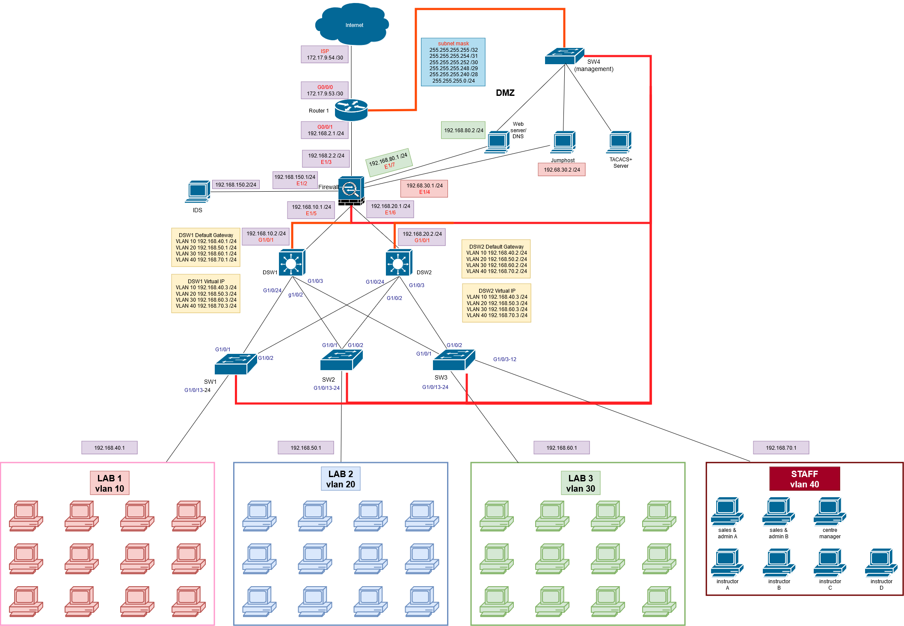

Network Security Infrastructure
ICT2217 — Designing & Hardening a Secure Enterprise Network

Overview
A team project where we designed, built, and secured an enterprise network from the ground up using Cisco equipment. The goal was not just connectivity — every layer of the architecture had to be hardened against real-world threats. We deployed a Cisco ASA firewall as the central security appliance, segmented the network into multiple trust zones, and layered defences from Layer 2 port security all the way up to application-layer inspection.
The network supports a realistic corporate scenario: departments separated by VLANs, a DMZ hosting a public web server, an out-of-band management plane, a dedicated IDS sensor receiving NetFlow and syslog data, and a jump host for secure administrative access. Every device is authenticated through a centralised TACACS+ server, and redundancy is built in at every critical point.
Firewall Security Zones
The Cisco ASA (FPR-1010) sits at the heart of the network, enforcing traffic policies between seven distinct zones:
OUTSIDE
Internet-facing interface connected to the edge router. Security level 0 — least trusted. Inbound ACLs restrict traffic to only expected flows like ICMP echo-reply and SSH to the jump host.
DMZ
Hosts the company web server (192.168.80.2). Security level 50 — semi-trusted. Internal VLANs can reach the web server, but DMZ cannot initiate connections inward.
Jump Host
Dedicated zone (192.168.30.0/24) for secure admin access. Administrators SSH into the jump host first, then pivot to manage internal devices — limiting direct exposure.
IDS
Isolated segment (192.168.150.0/30) for the intrusion detection sensor. Receives NetFlow data from R1 on UDP 9999 and syslog from the firewall for real-time monitoring.
DSW1 & DSW2
Internal zones connecting to distribution switches. Each has its own interface and ACL on the firewall, so east-west traffic between switch blocks is inspected.
Management
Out-of-band management network (10.1.1.0/24). TACACS+ server, device consoles, and management interfaces all sit on this isolated plane — completely separate from production traffic.
Security Features Implemented
Device Inventory
| Device | Platform | Role | Key Protocols |
|---|---|---|---|
| R1 | Cisco C8200L | Edge router | OSPF, NAT/PAT, NetFlow |
| ASA | Cisco FPR-1010 | Firewall | Zone-based ACLs, OSPF, Syslog |
| DSW1 | Cisco C9300L | Distribution switch | HSRP, OSPF, DHCP, Root Guard |
| DSW2 | Cisco C9300L | Distribution switch | HSRP, OSPF, DHCP, Root Guard |
| SW1 | Cisco C9200L | Access switch | DHCP Snooping, BPDU Guard |
| SW2 | Cisco C9200L | Access switch | DHCP Snooping, BPDU Guard |
| SW3 | Cisco C9200L | Access switch | TACACS+ AAA |
| SW4 | Cisco C9200L | Access switch | TACACS+ AAA |
My Role
I was responsible for configuring the distribution and access layer switches — setting up VLAN trunking, HSRP gateway redundancy, DHCP snooping, spanning-tree hardening (BPDU guard and root guard), and integrating all switches with the TACACS+ server for centralised authentication. I also worked on the firewall ACLs to control inter-zone traffic and tested the overall security posture of the network.
Team
Team 21 — "TheStiltons" | ICT2217 Network Security